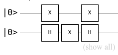

Module circuit_model_library.circuit_model
TODO
- Implementation of gate given a decision on exactly how it will be called/used
- Current quantum circuit implementation will only work for 2x2 matricies
Author(s): * Benjamin Carpenter(s1731178@ed.ac.uk)
Expand source code
"""This module details the main and specific functionality of the circuit model including
a functionality that will 'run' a circuit
.. todo::
* Implementation of gate given a decision on exactly how it will be called/used
* Current quantum circuit implementation will only work for 2x2 matricies
Author(s):
* Benjamin Carpenter(s1731178@ed.ac.uk)
"""
from circuit_model_library import matrices
import scipy.sparse
import numpy as np
class Gate(matrices.SquareMatrix):
"""A class to implement gates, will share a large amount of functionality with a square matrix
but will require have a more specific criteria for what form a matrix can take as well as
likely requirng additional functionality
Attributes:
gate_id: A unique identifier of the type of gate that the instance is
matrix: A matrix representing the operation of the gate
.. todo::
*Add verification so actual constraints on what a gate can be are observed (i.e. unitary)
"""
def __init__(self, matrix, gate_id=None):
"""Creates a gate object
Args:
Raises:
ValueError: On invalid form for a Quantum circuit gate
"""
#assert Hermatian, other requirments for a gate here
#Call the parent class constructor after verifying valid parameters for a gate
self.gate_id = gate_id
super().__init__(matrix)
class QuantumRegister(matrices.Vector):
"""A system of multiple qubits, abstractly the addition of multiple single qubits .
Attributes:
register: vector representing the qubit state
"""
def __init__(self, register_initial_state, shape=None):
"""Initialise a quantum register with specific values
Args:
register_initial_state:Either
A list of integers related to positions of 1s in the quantum register
Or
A sparse matrix that represents a quantum register (e.g. as the result of a
computation)
"""
if isinstance(register_initial_state, scipy.sparse.spmatrix):
#Case where an existing sparse matrix is passed we can simply genearate from this
super().__init__(register_initial_state)
return
elif(isinstance(register_initial_state[0],int)):
#Case given a list of ints that denote positions of 1s in our registe
bit_pos_shape = np.shape(register_initial_state)
if(shape == None):
shape = bit_pos_shape
#Call the constructor of the vector class for a one'd sparse matrix at the specified bit
#positions
super().__init__(scipy.sparse.coo_matrix((np.ones(bit_pos_shape),\
(register_initial_state,\
np.zeros(bit_pos_shape))),\
shape = shape))
else:
raise ValueError("Cannot create a quantum register with type "\
+str(type(register_initial_state)))
def measure(self):
"""Measures the register, returning the possible state values and probability of different
output bit values
'Possible state values' relates to the value represented by the qubits (or now just bits as
any superposition is collapsed on measurments) e.g. |11> has a 'state value' of 3
Returns:
A 2D list of possible values and their probabilities
i.e. [[Possible values],[Related Probability]]
Raises:
"""
#Because of how csc_matrix stores data, the values and poisitive bit posiotions are given
#simply by the indicies and data attributes, where the indices value represents a Qbit
#e.g. if the indice is 5 its equivalent to = |101> and the probability is given by
#the value in the data attribute squared hence
if(self.dimension[0]>self.dimension[1]): #Only works in case of column vector
return [self.matrix.indices,self.matrix.data**2]
class QuantumCircuit(Gate):
"""An object representing a quantum circuit, can be used to run circuits on ...
Constructs circuit from a given set of gates and schematic using the fact that a series of gates
is the dot product of the gates (in reverse order i.e. applying \\(\hat{A} -> \hat{B}\\) is
equivlent to applying the gate \\(\hat{C} := \hat{B}\cdot\hat{A} \\) and applying parallel gates
to the register is equivalent to the tensor product of these gates. By use of the Identity
matrix we can create a matrix representing the circuit
"""
def __init__(self, circuit_in, gates_dictionary = None):
"""Creates a quantum circuit which a register can be run on, effecively creating a
matrix that represents a set of gates fed in as a list of strings e.g. the matrix shown
..image:: example_gates.png
This would be represented by a list of strings as ["XIX","HXH"] where I is the identity
matix representing a gap
Uses the fact that tensor product of a gate is
Args:
circuit_in: Either
A list of strings representing each row of the quantum circuit where
each character in the string relates to (or part of) a quantum gate
Or
A sparse matrix representing the circuit
gates_dictionary: A dictionary of gate objects relating to those used in the circuit
with id's matching that of those used in the circuit string or None
Raises:
ValueError: If non list of strings argument given for the circit_string_list
.. todo:: Might not raise this error
"""
if not (all(isinstance(s, str) for s in circuit_in)):
#Where the input is not a string and hence is already a valid matrice representing a
#quantum circuit
super().__init__(circuit_in)
return
reversed_strings = self._reverse_gate_string_list(circuit_in)
#Restructure the data set from [[a_1,a_2,...],[b_1,b_2,...],[c_1,c_2,...]]
# to [[a_1,b_1,c_1],[a_2,b_2,c_3].[a_3,b_3,c_3],...]
reformed_strings = self._reform_data(reversed_strings)
# Go through each paralell gate in the list of parallel gates and replace each element with
# an matrix representing its gate, then tensor product together the column
circuit_matrix_cols = []
for gate_id_column in reformed_strings:
# Go through the whole column and replace each gate_id with actual gate matrix
circuit_matrix_cols.append(self._convert_gate_ids_to_gates(gate_id_column,\
gates_dictionary))
#Create the out circuit starting with an identity matrix spaning whole register dimension
#to dot everything with, Creates a gate spanning the quRegister
dimensions = self._tensor_product_gates(circuit_matrix_cols[0]).shape[0]
out_circuit = Gate(np.identity(dimensions))
for gates_col in circuit_matrix_cols: #For each column of gates...
if(gates_col[0].shape[0] == 2): #For 2x2 case
#Tensor product together the column in the list creates a gate spanning the
#quRegister
current_col = self._tensor_product_gates(gates_col)
#Dot the produced column to the circuit
out_circuit = out_circuit.dot(current_col)
else:
out_circuit = out_circuit.dot(gates_col[0])
#Create a gate that will represent the circuit from the final product
super().__init__(out_circuit)
def apply(self,quantum_register):
"""Applies the quantum circuit to a register and returns the superposition quantum register
Args:
quantum_register: The register representing the start state of the circuit
Return:
Quantum register after passing through the circuit, in a superposition of states
"""
return self*quantum_register
@staticmethod
def _tensor_product_gates(gates):
"""Gets the tensor product of a list of gates
e.g. a list [a,b,c,d] of gates -> a x b x c x d where x is the tensor product is returned
Args:
gates: A list of multiple gates to get the tensor product of
Returns:
The tensor product of the passed array of gates
"""
#Tensor product together the first two elelments of our 'column' so we have something to
#work on with the for loop for the rest of the 'column'
product = gates[0].tensor_product(gates[1])
#Apply tensor product to rest of the 'column' (though only if there are more elements)
if len(gates) > 2:
for gate in gates[2:]:
product = product.tensor_product(gate)
return product
@staticmethod
def _convert_gate_ids_to_gates(gate_ids,gates_dictionary):
"""
Goes through a list of gate id's and converts into a list of gates, preserving order
Args:
gate_ids: A list of gate_ids to be converted to actual gates
gates_dictionary: A dictionary of gate id's and the coresponding gates
Returns:
A list of gates in the same order as the list of gate_id's
"""
gates = []
for gate_id in gate_ids:
gates.append(gates_dictionary[gate_id]) # Replace the gate_id with the
# actual gate
return gates
@staticmethod
def _reverse_gate_string_list(circuit_string_list):
"""Reverse each row for dotting and applying in correct order later on
Args:
circuit_string_list: A list of strings each of which represents a series of gates in
the quantum circuit to be generated
"""
returnList = []
for x in circuit_string_list:
returnList.append(list(x[::-1])) # Reverses the string in place and convert to list
# e.g. "ABC" -> ['A','B','C']
return returnList
@staticmethod
def _reform_data(oppDat):
"""Helper function that takes a list of lists and returns an arrays of a single variables
i.e. [[a1,b1,c1,d1],[a2,b2,c2,d2]] -> [[a1,a2],[b1,b2],[c1,c2],[d1,d2]]
"""
lenIndi = len(oppDat[0])
rDat = []
for i in range(len(oppDat[0])):#Better ways of doing but creates an empty
#array of data
rDat.append([])
oppDat = np.array(oppDat).flatten()#Create 1D long list from given 2D list
for i in range(len(oppDat)):
rDat[i%lenIndi].append(oppDat[i]) #Append value to the correct
#position using mod
return rDatClasses
class Gate (matrix, gate_id=None)-
A class to implement gates, will share a large amount of functionality with a square matrix but will require have a more specific criteria for what form a matrix can take as well as likely requirng additional functionality
Attributes
gate_id- A unique identifier of the type of gate that the instance is
matrix- A matrix representing the operation of the gate
TODO
*Add verification so actual constraints on what a gate can be are observed (i.e. unitary)
Creates a gate object Args:
Raises
ValueError- On invalid form for a Quantum circuit gate
Expand source code
class Gate(matrices.SquareMatrix): """A class to implement gates, will share a large amount of functionality with a square matrix but will require have a more specific criteria for what form a matrix can take as well as likely requirng additional functionality Attributes: gate_id: A unique identifier of the type of gate that the instance is matrix: A matrix representing the operation of the gate .. todo:: *Add verification so actual constraints on what a gate can be are observed (i.e. unitary) """ def __init__(self, matrix, gate_id=None): """Creates a gate object Args: Raises: ValueError: On invalid form for a Quantum circuit gate """ #assert Hermatian, other requirments for a gate here #Call the parent class constructor after verifying valid parameters for a gate self.gate_id = gate_id super().__init__(matrix)Ancestors
Subclasses
Inherited members
class QuantumCircuit (circuit_in, gates_dictionary=None)-
An object representing a quantum circuit, can be used to run circuits on …
Constructs circuit from a given set of gates and schematic using the fact that a series of gates is the dot product of the gates (in reverse order i.e. applying \hat{A} -> \hat{B} is equivlent to applying the gate \hat{C} := \hat{B}\cdot\hat{A} and applying parallel gates to the register is equivalent to the tensor product of these gates. By use of the Identity matrix we can create a matrix representing the circuit
Creates a quantum circuit which a register can be run on, effecively creating a matrix that represents a set of gates fed in as a list of strings e.g. the matrix shown

This would be represented by a list of strings as ["XIX","HXH"] where I is the identity matix representing a gap
Uses the fact that tensor product of a gate is
Args
circuit_in- Either A list of strings representing each row of the quantum circuit where each character in the string relates to (or part of) a quantum gate Or A sparse matrix representing the circuit
gates_dictionary- A dictionary of gate objects relating to those used in the circuit
with id's matching that of those used in the circuit string or None
Raises
ValueError- If non list of strings argument given for the circit_string_list
TODO
Might not raise this error
Expand source code
class QuantumCircuit(Gate): """An object representing a quantum circuit, can be used to run circuits on ... Constructs circuit from a given set of gates and schematic using the fact that a series of gates is the dot product of the gates (in reverse order i.e. applying \\(\hat{A} -> \hat{B}\\) is equivlent to applying the gate \\(\hat{C} := \hat{B}\cdot\hat{A} \\) and applying parallel gates to the register is equivalent to the tensor product of these gates. By use of the Identity matrix we can create a matrix representing the circuit """ def __init__(self, circuit_in, gates_dictionary = None): """Creates a quantum circuit which a register can be run on, effecively creating a matrix that represents a set of gates fed in as a list of strings e.g. the matrix shown ..image:: example_gates.png This would be represented by a list of strings as ["XIX","HXH"] where I is the identity matix representing a gap Uses the fact that tensor product of a gate is Args: circuit_in: Either A list of strings representing each row of the quantum circuit where each character in the string relates to (or part of) a quantum gate Or A sparse matrix representing the circuit gates_dictionary: A dictionary of gate objects relating to those used in the circuit with id's matching that of those used in the circuit string or None Raises: ValueError: If non list of strings argument given for the circit_string_list .. todo:: Might not raise this error """ if not (all(isinstance(s, str) for s in circuit_in)): #Where the input is not a string and hence is already a valid matrice representing a #quantum circuit super().__init__(circuit_in) return reversed_strings = self._reverse_gate_string_list(circuit_in) #Restructure the data set from [[a_1,a_2,...],[b_1,b_2,...],[c_1,c_2,...]] # to [[a_1,b_1,c_1],[a_2,b_2,c_3].[a_3,b_3,c_3],...] reformed_strings = self._reform_data(reversed_strings) # Go through each paralell gate in the list of parallel gates and replace each element with # an matrix representing its gate, then tensor product together the column circuit_matrix_cols = [] for gate_id_column in reformed_strings: # Go through the whole column and replace each gate_id with actual gate matrix circuit_matrix_cols.append(self._convert_gate_ids_to_gates(gate_id_column,\ gates_dictionary)) #Create the out circuit starting with an identity matrix spaning whole register dimension #to dot everything with, Creates a gate spanning the quRegister dimensions = self._tensor_product_gates(circuit_matrix_cols[0]).shape[0] out_circuit = Gate(np.identity(dimensions)) for gates_col in circuit_matrix_cols: #For each column of gates... if(gates_col[0].shape[0] == 2): #For 2x2 case #Tensor product together the column in the list creates a gate spanning the #quRegister current_col = self._tensor_product_gates(gates_col) #Dot the produced column to the circuit out_circuit = out_circuit.dot(current_col) else: out_circuit = out_circuit.dot(gates_col[0]) #Create a gate that will represent the circuit from the final product super().__init__(out_circuit) def apply(self,quantum_register): """Applies the quantum circuit to a register and returns the superposition quantum register Args: quantum_register: The register representing the start state of the circuit Return: Quantum register after passing through the circuit, in a superposition of states """ return self*quantum_register @staticmethod def _tensor_product_gates(gates): """Gets the tensor product of a list of gates e.g. a list [a,b,c,d] of gates -> a x b x c x d where x is the tensor product is returned Args: gates: A list of multiple gates to get the tensor product of Returns: The tensor product of the passed array of gates """ #Tensor product together the first two elelments of our 'column' so we have something to #work on with the for loop for the rest of the 'column' product = gates[0].tensor_product(gates[1]) #Apply tensor product to rest of the 'column' (though only if there are more elements) if len(gates) > 2: for gate in gates[2:]: product = product.tensor_product(gate) return product @staticmethod def _convert_gate_ids_to_gates(gate_ids,gates_dictionary): """ Goes through a list of gate id's and converts into a list of gates, preserving order Args: gate_ids: A list of gate_ids to be converted to actual gates gates_dictionary: A dictionary of gate id's and the coresponding gates Returns: A list of gates in the same order as the list of gate_id's """ gates = [] for gate_id in gate_ids: gates.append(gates_dictionary[gate_id]) # Replace the gate_id with the # actual gate return gates @staticmethod def _reverse_gate_string_list(circuit_string_list): """Reverse each row for dotting and applying in correct order later on Args: circuit_string_list: A list of strings each of which represents a series of gates in the quantum circuit to be generated """ returnList = [] for x in circuit_string_list: returnList.append(list(x[::-1])) # Reverses the string in place and convert to list # e.g. "ABC" -> ['A','B','C'] return returnList @staticmethod def _reform_data(oppDat): """Helper function that takes a list of lists and returns an arrays of a single variables i.e. [[a1,b1,c1,d1],[a2,b2,c2,d2]] -> [[a1,a2],[b1,b2],[c1,c2],[d1,d2]] """ lenIndi = len(oppDat[0]) rDat = [] for i in range(len(oppDat[0])):#Better ways of doing but creates an empty #array of data rDat.append([]) oppDat = np.array(oppDat).flatten()#Create 1D long list from given 2D list for i in range(len(oppDat)): rDat[i%lenIndi].append(oppDat[i]) #Append value to the correct #position using mod return rDatAncestors
Methods
def apply(self, quantum_register)-
Applies the quantum circuit to a register and returns the superposition quantum register
Args
quantum_register- The register representing the start state of the circuit
Return
Quantum register after passing through the circuit, in a superposition of states
Expand source code
def apply(self,quantum_register): """Applies the quantum circuit to a register and returns the superposition quantum register Args: quantum_register: The register representing the start state of the circuit Return: Quantum register after passing through the circuit, in a superposition of states """ return self*quantum_register
Inherited members
class QuantumRegister (register_initial_state, shape=None)-
A system of multiple qubits, abstractly the addition of multiple single qubits .
Attributes
register- vector representing the qubit state
Initialise a quantum register with specific values
Args
register_initial_state:Either A list of integers related to positions of 1s in the quantum register Or A sparse matrix that represents a quantum register (e.g. as the result of a computation)
Expand source code
class QuantumRegister(matrices.Vector): """A system of multiple qubits, abstractly the addition of multiple single qubits . Attributes: register: vector representing the qubit state """ def __init__(self, register_initial_state, shape=None): """Initialise a quantum register with specific values Args: register_initial_state:Either A list of integers related to positions of 1s in the quantum register Or A sparse matrix that represents a quantum register (e.g. as the result of a computation) """ if isinstance(register_initial_state, scipy.sparse.spmatrix): #Case where an existing sparse matrix is passed we can simply genearate from this super().__init__(register_initial_state) return elif(isinstance(register_initial_state[0],int)): #Case given a list of ints that denote positions of 1s in our registe bit_pos_shape = np.shape(register_initial_state) if(shape == None): shape = bit_pos_shape #Call the constructor of the vector class for a one'd sparse matrix at the specified bit #positions super().__init__(scipy.sparse.coo_matrix((np.ones(bit_pos_shape),\ (register_initial_state,\ np.zeros(bit_pos_shape))),\ shape = shape)) else: raise ValueError("Cannot create a quantum register with type "\ +str(type(register_initial_state))) def measure(self): """Measures the register, returning the possible state values and probability of different output bit values 'Possible state values' relates to the value represented by the qubits (or now just bits as any superposition is collapsed on measurments) e.g. |11> has a 'state value' of 3 Returns: A 2D list of possible values and their probabilities i.e. [[Possible values],[Related Probability]] Raises: """ #Because of how csc_matrix stores data, the values and poisitive bit posiotions are given #simply by the indicies and data attributes, where the indices value represents a Qbit #e.g. if the indice is 5 its equivalent to = |101> and the probability is given by #the value in the data attribute squared hence if(self.dimension[0]>self.dimension[1]): #Only works in case of column vector return [self.matrix.indices,self.matrix.data**2]Ancestors
Methods
def measure(self)-
Measures the register, returning the possible state values and probability of different output bit values
'Possible state values' relates to the value represented by the qubits (or now just bits as any superposition is collapsed on measurments) e.g. |11> has a 'state value' of 3
Returns
A2Dlistofpossiblevaluesandtheirprobabilitiesi.e.[[Possiblevalues],[RelatedProbability]]Raises:
Expand source code
def measure(self): """Measures the register, returning the possible state values and probability of different output bit values 'Possible state values' relates to the value represented by the qubits (or now just bits as any superposition is collapsed on measurments) e.g. |11> has a 'state value' of 3 Returns: A 2D list of possible values and their probabilities i.e. [[Possible values],[Related Probability]] Raises: """ #Because of how csc_matrix stores data, the values and poisitive bit posiotions are given #simply by the indicies and data attributes, where the indices value represents a Qbit #e.g. if the indice is 5 its equivalent to = |101> and the probability is given by #the value in the data attribute squared hence if(self.dimension[0]>self.dimension[1]): #Only works in case of column vector return [self.matrix.indices,self.matrix.data**2]
Inherited members